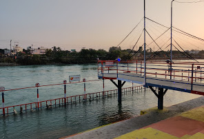
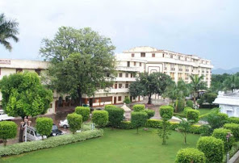

This Ashram belongs to Satpal Maharaj, a cabinet minister in Uttarakhand Government and located at the heart of the Haridwar. Before he was in Congress party. Satpal Maharaj a spiritual leader and a political figure has many followers specially in Uttarakhand, Uttar Pradesh,Bihar, West Bengal,Odisha. This ashram has a wide territory in which they have facility to stay, to organize a function, a homeopathy clinic etc. This Ashram's illegal encroachment was a matter of dispute for a long time and this causes several fights between Satpal maharaj's followers and oppositon. One of the Gate of this Ashram opens at the Haridwar-Jwalapur road(station road) and the opposite one at the Upari Gang Nehar( Ganga Canal) where a big bank is named as Prem Nagar ghat. People use to come at this ghat to take holy bath and to visit as well. Nearby places: Chandracharya chowk ,Shankar Ashram, Prem Nagar Ganga bridge , Bhagat singh chowk and Singhdwar are just at walking distance from this place(within 1 Km). यह आश्रम उत्तराखंड सरकार में कैबिनेट मंत्री सतपाल महाराज का है और हरिद्वार के मध्य में स्थित है। इससे पहले वह कांग्रेस पार्टी में थे। सतपाल महाराज एक आध्यात्मिक नेता और राजनीतिक शख्सियत के उत्तराखंड, उत्तर प्रदेश, बिहार, पश्चिम बंगाल, ओडिशा में विशेष रूप से कई अनुयायी हैं। इस आश्रम में एक विस्तृत क्षेत्र है जिसमें उन्हें रहने, एक समारोह, होम्योपैथी क्लिनिक आदि आयोजित करने की सुविधा है। यह आश्रम का अवैध अतिक्रमण लंबे समय से विवाद का विषय था और यह सतपाल महाराज के अनुयायियों और विरोध के बीच कई झगड़े का कारण बनता है।इस आश्रम का एक द्वार हरिद्वार-ज्वालापुर रोड (स्टेशन रोड) में खुलता है और इसके विपरीत उपरी गंगा नेहर (गंगा नहर) है जहाँ एक बड़े बैंक का नाम प्रेम नगर घाट है। लोग इस घाट पर पवित्र स्नान करने और साथ ही दर्शन करने के लिए आते हैं। निकटवर्ती स्थान: चंद्राचार्य चौक, शंकर आश्रम, प्रेम नगर गंगा पुल, भगत सिंह चौक और सिंहद्वार इस स्थान से पैदल दूरी पर (1 किलोमीटर के भीतर) हैं।
 